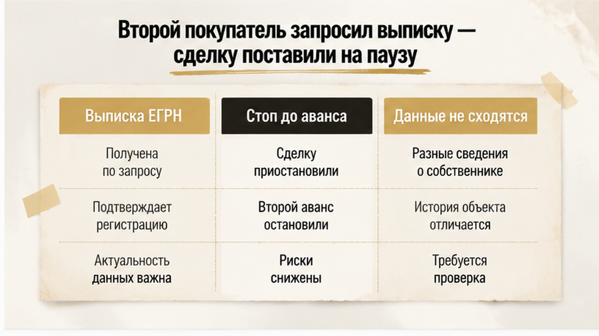
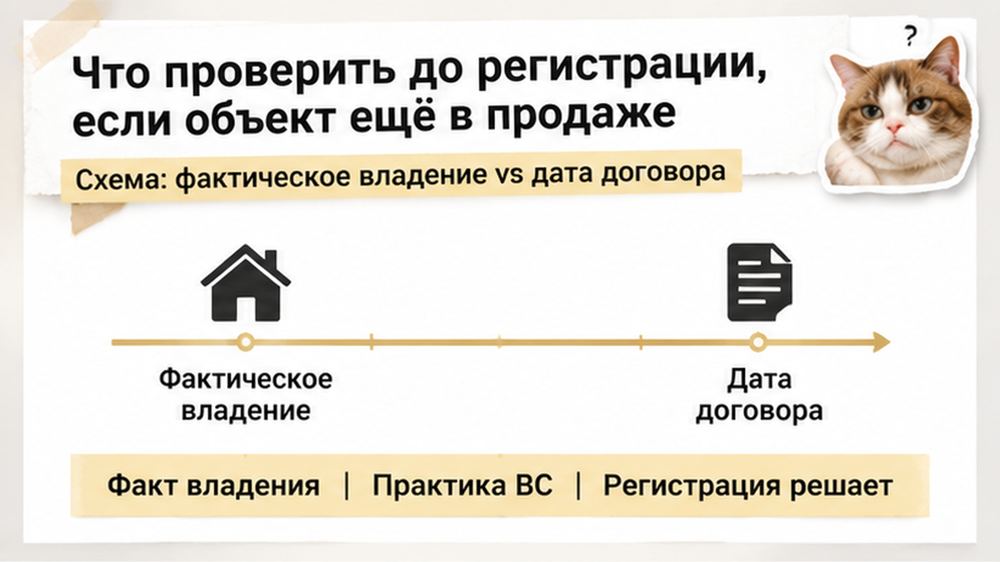
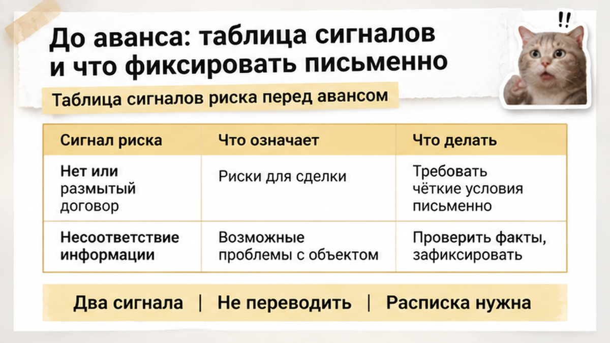

Аванс за квартиру уже лежал в агентстве. В это же время ключи от той же квартиры показывали другой паре.
История тюменская, свежая и до зубной боли типичная. Квартиру на вторичке продавали через агентство: первая пара внесла аванс, подписала бумагу и села ждать дату сделки. Пока они ждали — одобрение банка, оценку, справки — квартиру продолжали показывать, и вторая пара тоже сказала «берём» и тоже начала готовить деньги. Дальше всё решила одна скучная процедура: кто первым закажет свежую выписку из ЕГРН. Заказали вторые покупатели — и увидели то, что первым стоило увидеть ещё до передачи аванса. Сделку поставили на паузу, второй аванс не ушёл вообще.
То есть одних спасла бумага. Других — не спасло ничего, кроме нервов.
Я — Святослав Шакин, личный риэлтор The Риэлтор в Тюмени. Разбираю сделки по документам до того, как деньги уехали. Живые кейсы — в Telegram и MAX.
Выглядит как обман. Называется по-рабочему: подстраховка продавца.
Смотрите, как это устроено изнутри. Первая пара внесла аванс, подписала соглашение — и с этой минуты живёт в уверенности, что квартира их. С точки зрения продавца ситуация другая: у него не «продано», у него «один вариант есть». Аванс маленький. Ответственность по бумаге — почти никакая. Срок — «недели три, как ипотеку одобрят».
А три недели в тюменской вторичке — это долго. За это время может отвалиться банк, может уплыть оценка, может передумать сам покупатель. Продавец это знает. Агент — тем более.
И тут приходит вторая пара. Быстрее, спокойнее, деньги ближе.
Никто не рвёт первое соглашение вслух. Просто показы не прекращаются.
Дальше начинается разница, о которой люди узнают уже в конфликте.
Аванс — это просто деньги в счёт будущей оплаты. Сделка не состоялась — аванс возвращают. Всё. Никаких санкций для продавца, если в бумаге их не прописали отдельно.
Задаток — другая история: если сделка сорвалась по вине продавца, он возвращает в двойном размере. Но и тут суд читает не название файла, а формулировки. Написано «аванс», значит аванс, сколько бы вы ни называли это задатком в переписке.
И самое неприятное: предварительный договор без реальных обеспечительных мер — это джентльменское соглашение. С продавцом, который параллельно принимает других покупателей.
Что теряет первая пара, если её обходят? Не только время. Оценку квартиры оплатили — сгорела. Одобрение ипотеки имеет срок — тикает. Съёмную квартиру продлевать не стали, потому что «в мае переезжаем». Иногда — деньги за услуги, которые «уже оказаны».
А если обе сделки доходят до Росреестра, начинается совсем весёлое: регистрируют переход права по одному заявлению, второму приходит отказ. С распиской, договором и полным пакетом бумаг на руках. И дальше только иск.
Поэтому фраза «мы внесли аванс, квартира за нами» — это не факт. Это надежда, оформленная на листе А4.

Вторых покупателей спасла не интуиция и не «что-то мне в продавце не понравилось». Их спасла обычная выписка из ЕГРН, заказанная до передачи денег.
Они не поверили на слово. Заказали актуальные сведения по квартире — и то, что пришло в ответ, со словами продавца не сошлось. Дальше решение было единственно верным: стоп, разбираемся, деньги не передаём. Сделку поставили на паузу, аванс остался у покупателей.
Со стороны это выглядит как «сорвали сделку». По факту это единственный момент, когда у покупателя ещё есть рычаг. После аванса рычага нет — есть переписка и просьбы.
Что видно в выписке из ЕГРН по квартире:
Важная деталь по срокам: выписка актуальна на дату выдачи. Не на месяц, не на «мы летом смотрели». Арест могут наложить за сутки, залог зарегистрировать за пару дней. Поэтому выписка нужна дважды: перед авансом и перед подписанием договора.
И да, с 2023 года ФИО собственника в общедоступных сведениях закрыты без его согласия — но обременения, аресты, запреты и споры видны любому желающему. Именно они и решают, будет ли у вас квартира или судебный процесс.
Вторая пара просто прочитала бумагу до денег. Всё. Никакого детектива.
Самая живучая иллюзия покупателя звучит так: «У меня договор подписан раньше, значит квартира моя».
Не моя. Подписанный договор — это обязательство продавца, а не право собственности. Собственником вас делает не бумага на кухонном столе и не рукопожатие в подъезде, а запись в ЕГРН.
Пока записи нет, у вас на руках лежит требование к человеку. Хорошее требование. Но всё-таки к человеку, а не к квадратным метрам.
И вот тут двойная продажа перестаёт быть детективом и становится арифметикой. Два договора, один объект, две пары людей с одинаковой уверенностью в голосе. Закон в такой ситуации смотрит не на дату подписания, а на то, кто дошёл до регистрации.
Тот, кто зарегистрировал переход права, получает квартиру. Второй получает право требовать деньги обратно. Через суд. С продавца, который к этому моменту обычно уже потратил всё, что взял, и очень удивляется вопросам.
Дальше начинается неромантичная часть: решение суда, исполнительный лист, приставы, «имущества не обнаружено». Год, два, три. Люди в это время живут не в квартире, а в переписке.
Второй нюанс — «я подал документы раньше» тоже не гарантия. Между подачей и записью есть коридор, и в этом коридоре всякое случается.
Регистрацию могут приостановить: не хватило справки, нашлось несоответствие в площади, всплыл нотариальный запрос, потребовалось согласие. Электронная подача и подача через МФЦ идут разными скоростями. Пока ваш пакет висит на приостановке, чужой может спокойно пройти дальше.
Я видел в Тюмени сделки, где разница между «квартира ваша» и «идите в суд» составляла четыре рабочих дня. Никакой мистики. Просто один покупатель подал документы в день подписания, а второй решил «на следующей неделе, чтобы всё спокойно».
И третий момент, о котором в чатах спорят громче всего, — добросовестность. Да, покупатель, который проверил всё что мог и заплатил рыночную цену, защищён сильнее того, кто отдал деньги без документов. Но добросовестность — это аргумент в суде, а не входной билет в квартиру. Она помогает вернуть деньги и отбиться от обвинений. Она не отменяет запись в реестре, если запись уже чужая.
Поэтому фраза «я первый» работает ровно в одном значении: первый в ЕГРН. Всё остальное — про то, кто первым сядет писать иск.

Тюменский случай, с которого мы начали, закончился нормально по одной причине: второй аванс успели остановить до того, как он ушёл продавцу. Не потому, что кто-то оказался прозорливым. Потому что кто-то поленился меньше обычного и заказал свежую выписку.
Свежая — это не «месяц назад брали». Свежая — накануне или в день сделки.
Выписка из ЕГРН показывает актуального собственника, обременения и аресты. Выписка о переходе прав показывает историю: как часто квартира меняла хозяев и как быстро. Три перепродажи за два года на Широтной или в Восточном — не приговор, но повод задавать вопросы медленнее и громче.
Дальше — простые движения, которые почему-то делают не все.
Спросите продавца прямо: есть ли другие подписанные договоры, авансовые соглашения, расписки, предварительные ДКП. Задайте вопрос при свидетелях и зафиксируйте ответ в договоре — отдельным пунктом о том, что объект не обещан третьим лицам.
Пункт не остановит мошенника. Зато он превращает «я забыл» в «я обманул» — а это уже другая статья разговора и другая перспектива в суде.
Проверьте, снято ли объявление. Если квартира продолжает висеть на площадках после вашего аванса — это не забывчивость риэлтора, это часто продолжение показов. Просите снять при вас.
Не отдавайте аванс наличными в машине у подъезда. Счёт, аккредитив, нотариальный депозит — любой вариант, где движение денег видно и обратимо. Наличные в конверте бесследны, и именно на этом строится половина историй.
Подавайте документы в день подписания. Не «на следующей неделе», не «когда справка придёт». Каждый день паузы — это чужое окно.
И отслеживайте статус по номеру заявления, не ждите звонка. Появилась приостановка — выясняйте причину сразу, а не через неделю, когда вспомнили.
| Что смотрим | Где | Что должно насторожить |
|---|---|---|
| Актуальный собственник, аресты, обременения | Выписка ЕГРН накануне сделки | Выписка старше недели; «сейчас пришлю» |
| История переходов права | Выписка о переходе прав | Частая смена хозяев, короткие сроки владения |
| Другие договоры и авансы | Прямой вопрос + пункт в ДКП | Уход от ответа, «это неважно» |
| Объявление на площадках | Авито, Циан, местные чаты | Продолжаются показы после аванса |
| Движение аванса | Счёт, аккредитив, депозит | Только наличные, только «сегодня» |
| Ход регистрации | Номер заявления в Росреестре | Приостановка без объяснений; затяжка подачи |
Отдельно — про доверенности. Если продаёт представитель, а собственник «в другом городе, на связи по видео», проверяйте доверенность у нотариуса и требуйте разговора с собственником напрямую. Схема с двумя покупателями почти всегда живёт там, где живого хозяина никто не видел.
И маленький приём, который в Тюмени работает хорошо: собственник может подать заявление о невозможности регистрации без его личного участия. Если продавец на такое предложение реагирует спокойно — это уже неплохой сигнал. Если реагирует нервно — вы узнали много за две минуты.
В объявлениях эти три слова стоят через запятую, будто синонимы. «Вносите аванс, оформим задаток, подпишем предварительный». Продавец говорит одно, покупатель слышит другое, а суд потом читает третье — то, что написано в бумаге.
Аванс — это просто предоплата в счёт будущей цены. Сделка не состоялась — деньги возвращаются. Кто виноват в срыве, для аванса значения не имеет. Обеспечительной функции у него нет: он не удерживает продавца, он лишь показывает, что вы серьёзно настроены.
Задаток — статьи 380–381 ГК. Здесь ответственность двухсторонняя: сорвал продавец — возвращает двойную сумму, отказался покупатель — деньги остаются у продавца. Звучит как броня. Но задаток обеспечивает обязательство, а обязательство должно откуда-то взяться. Расписка «получил задаток 100 000 рублей» без договора, из которого видно, что и когда стороны обязаны заключить, суд спокойно переквалифицирует в аванс. И двойного размера не будет.
Обеспечительный платёж (статья 381.1 ГК) — конструкция гибче: стороны сами прописывают, при каких обстоятельствах деньги остаются, а при каких возвращаются. Работает ровно настолько, насколько аккуратно написан текст.
Предварительный договор — статья 429 ГК. В нём должны быть предмет, цена, срок заключения основного договора и обязанность его заключить. Если продавец уклоняется, покупатель вправе идти в суд и требовать понуждения к сделке.
А теперь неприятное. Ни один из четырёх инструментов физически не мешает продавцу показать квартиру ещё раз и взять вторую предоплату. Бумага не блокирует объект. Она определяет только одно: что вы будете взыскивать потом. И если квартира уже ушла второму покупателю и переход права зарегистрирован — понуждать не к чему. Останется иск о деньгах к человеку, у которого этих денег может уже не быть.
Поэтому защита покупателя живёт не в форме документа, а в двух днях до того, как деньги ушли. Похожий срыв перед авансом из-за документов я разбирал в материале когда согласие супруги не подтвердили, а про бумагу, которая не совпала с реестром — в кейсе когда справку о закрытии ипотеки показали, а залог остался.
Разбираю тюменскую вторичку каждую неделю — что показали, что скрыли, где остановились до денег. Подписывайтесь в Telegram и MAX.

Ни один из этих признаков сам по себе не означает мошенничество. Два-три вместе — повод не доставать деньги сегодня.
| Сигнал на просмотре | Что за ним может стоять | Что фиксировать письменно |
|---|---|---|
| «Аванс сегодня, за вами очередь» | Искусственный дефицит, попытка проскочить проверку | Точная дата и срок брони в соглашении об авансе |
| Продажа по доверенности, собственник «в другом городе» | Собственник может не знать о продаже | Реквизиты доверенности, проверка в реестре нотариальной палаты, видеосвязь с собственником |
| Показывают скрин выписки или документ месячной давности | За месяц в ЕГРН меняется многое | Свежая выписка, заказанная вами, а не продавцом |
| Правоустанавливающий документ — дубликат, оригиналы «у юриста» | Оригинал может быть на руках у другого покупателя | Письменное объяснение, где оригиналы и когда будут |
| Квартиру показывают разные «агенты» | Объект гуляет по нескольким каналам без единого контроля | Кто уполномочен собственником и на каком основании |
| Просят наличные без расписки или перевод третьему лицу | Деньги потом не привязать к сделке | Платёж на счёт собственника с назначением платежа |
| Цена заметно ниже района | Скрытое обременение, спор, спешка | Причина скидки — в тексте соглашения |
Соглашение об авансе должно содержать адрес, кадастровый номер, паспортные данные собственника, сумму, срок и условия возврата. Если продавец готов взять деньги, но не готов подписать такую бумагу — это и есть ответ.
И отдельная строчка, которую я прошу читать внимательно: выписку заказывайте сами, за день до передачи денег. Не за неделю. Не «продавец прислал». Именно сами и именно перед. Про доверенность и полномочия продавца — в разборе когда квартиру продавали по доверенности, про аванс накануне смены собственника — в истории когда задаток чуть не внесли перед торгами.
А вы бы отдали аванс, если продавец торопит и говорит, что за вами уже стоит второй покупатель? Напишите в комментариях — интересно, сколько человек честно скажет «отдал бы, квартира понравилась».
Тюменская история закончилась хорошо не потому, что кому-то повезло. Она закончилась хорошо, потому что между просмотром и деньгами кто-то потратил один день на свежую выписку. Второй аванс не ушёл. Разбираться пришлось не в суде, а в переписке.
Вторичка в Тюмени — нормальный рынок. Здесь покупают квартиры каждый день, и большинство сделок проходит спокойно. Просто у покупателя есть узкое окно — от «нам понравилось» до «мы перевели». В этом окне решается всё.
Материал проверен: Святослав Шакин, личный риэлтор в Тюмени. Ориентир для покупателя, не индивидуальная юридическая консультация.